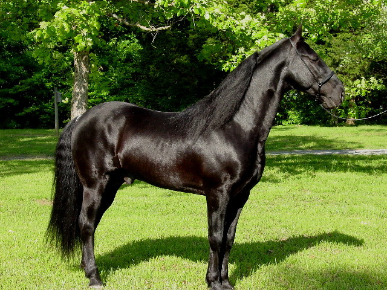

General Information on the Tennessee Walking Horse Breed
Looking for a particular breed of horse which is naturally docile, known for good, calm dispositions, smooth to ride and easy to handle? All your research will point you to the Tennessee Walking Horse. I get lots of calls from people who have not had a horse in their lives since they were teens, or never had one at all, empty nesters, people who have more time on their hands due to a change in career, marital status, family status, and/or even health status! Doctors who have any horse knowledge at all consistently refer people with back problems (who do not want to give up their riding) to gaited horses, especially the Tennessee Walking Horses.
Imagine having the sweetest natured horse, a boost for your confidence, and at the same time, never bouncing in the saddle! No posting, no jarring, just smooth sailing.
- The Tennessee Walking Horse is renowned for his ability to perform a smooth, 4 beat lateral gait, similar to other breeds of horses, except more quickly timed, and they are BORN that way! Yes, the first steps they take are gaited steps, no training or devices needed. The Tennessee Walking Horse performs three distinct gaits: the flat foot walk, running walk, and canter. The horse glides over the track left by the front foot with the hind foot, which is known as an overstride. A true gaited Tennessee Walker will nod his head in rhythm with the cadence of his feet, and sometimes flop their ears with each nod. Most walking horses are capable of performing a regular slow walk like any other breed, a flat walk (the first gait), a running walk (the 2nd gait, which can be as fast as 10 mph) and then the canter. Walking horses are also known for their beautiful carousel canters, rising and falling slowing and smoothly. Other gaits that can be performed by some Walkers are the pace (which is undesirable because it is rough), the rack, the foxtrot, and the single-foot.
- This light breed of pleasure horse was bred to work in the fields during the week, especially to ride the turn rows on the plantations in the south, but be a smooth ride on the weekends for pleasure. A fusion of Thoroughbreds, Canadian Pacers, Saddlebreds, Morgans, American Standardbreds and Narragansett Pacers, this docile servant evolved in the middle Tennessee bluegrass region, and therefore christened the Tennessee Walking Horse. The Tennessee Walkers size ranges from 14H to 17H, with the average being from 15H to 15.2H. From the 1930's, this gentle breed was known for having rather large, coarse heads, but through the years, especially due to the influence of Pride of Midnight, a son of the 1945, 1946 World Grand Champion Midnight Sun. We believe the beautiful head began with him, and most Walkers today are much more refined and pretty than their ancestors. Colors are almost limited to your imagination! Walkers are black, sorrel, chestnut, grey, roan, bay, buckskin, champagne, palomino, cremello and spotted (sabino, tobiano and overo).